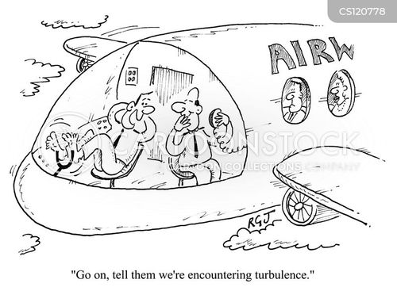

Digitix08's Testsite |
|
| Home | Search Login Games Articole parinti Pastila tehnică |
|
P012 Tehnica Human Factors (HF) HF se referă la modalitățile în care omul poate interacționa cu un sistem sau
proces. Omul poate să uite, să nu recunoască, să o facă pe deșteptul, etc. Poate
părea deplasat, însă foarte multe sisteme iau în considerare modul în care un
operator uman poate greși (intenționat sau...). Îmi amintesc că acum ceva ani lucram la proiectul unui dispozitiv mobil pentru alinierea senzorilor unui elicopter. Suportul acestuia trebuia prevăzut cu niste rotile. Am estimat o anumită dimensiune a roților funcție de greutatea dispozitivului. Un proiectant experimentat mi-a recomandat un diametru mult mai mare. La privirea mea mirată acesta mi-a spus: "n-ai vrea să știi ce ar putea face cei de la mentenanță în schimbul de noapte..." Am înțeles că se putea lăsa cu curse de dispozitive prin hangar... La verificarea proiectului, tot acesta mi-a spus: "adaugă niște puncte de sudură între șurub și piuliță". Am fost foarte contrariat pentru că prevăzusem pentru fixarea rotilelor șaibe Grower și contrapiulițe. În opinia mea montajul era beton. "Uite-te ce bine arată rotilele astea. Sigur vor face cu ochiul la careva care le va folosi la vreun cărucior pe-acasă..." Acestea au fost situații prevăzute de un ochi experimentat. Însă cine ar fi putut prevedea vreodată cătun pilot își va vărsa cafeaua pe panoul de bord? Sau că va lăsa pe copilul lui la manșă? Sau se va prăbuși intenționat cu avionul plin cu pasageri într-un munte?.. În armată ni se povestea cum un pilot începător, știind că iubita lui a urmărit zborul, după aterizare a vrut să o surprindă și s-a catapultat. A uitat însă că apucase să își dezlege centurile de siguranță... Veți spune că orice sistem este conceput pentru a fi operat în niște condiții definite (ex. accelerație max, turație max), fiind operat de un om bine instruit și... responsabil... E perfect adevărat! Însă fiecare echipă de proiectanți face tot posibilul că scăpări cauzate de HF să nu poată fi posibile. https://images.app.goo.gl/LNSzZKyveh2NTbjN9  |
|